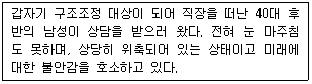
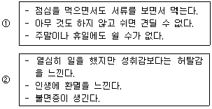
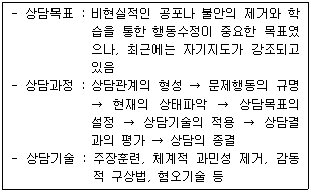
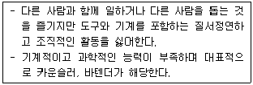
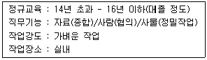
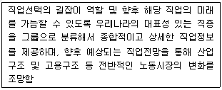
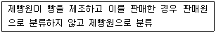
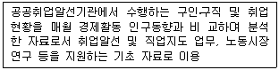
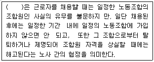
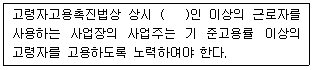

직업상담사-2급(구) (2007-03-04 기출문제)
1과목: 직업상담ㆍ심리학
1. 다음의 내담자를 상담할 경우 가장 먼저 해야 할 것은?

- 관계 형성
- 상담자의 전문성 소개
- 상담 구조 설명
- 과제 부여
(정답률: 알수없음)

2. 다음 중 직업상담사에게 요구되는 역할이 아닌 것은?
- 직업정보를 분석하고 구인, 구직 정보제공
- 구직자의 직업적 문제를 진단하고 해결 및 지원
- 노동통계를 분석하여 새로운 직업전망을 예견하여 미래의 취업정보를 제공
- 직업 상담실을 관리하며 구직자의 행동을 조정 및 통제
(정답률: 알수없음)
3. 경력개발 직업 상담에서 상담자의 주요 역할이 아닌 것은?
- 현실적인 기대를 가지고 조직을 면밀하게 평가하고 선택하도록 돕는다.
- 필요한 경우 미리 은퇴를 준비시킨다.
- 변화하는 조직에서 새로운 기술을 배우고 이질적인 작업환경에 적응하도록 돕는다.
- 조직의 권력관계에서 생긴 갈등을 해결하도록 돕는다.
(정답률: 알수없음)
4. 직업 상담을 진행함에 있어 내담자들은 자신의 직업세계에 대해서 충분한 정보를 알고 있다고 잘못 생각하는 경우가 많은데 내담자가 “ 내 상사가 그러는데 나는 책임감이 없대요．” 라고 진술한 경우는 어떤 오류가 발생한 경우인가?
- 삭제
- 참고자료
- 불문명한 동사사용
- 어투의 사용
(정답률: 알수없음)
5. 과거에 했던 선택의 회상, 절정경험, 자유시간과 금전사용 계획 등을 조사하고 존경하는 사람을 쓰게 하는 등의 상담행위는 다음 중 무엇을 위한 것인가?
- 내담자의 동기 사정을 위해서
- 내담자의 역할 관계 사정을 위해서
- 내담자의 가치 사정을 위해서
- 내담자의 흥미 사정을 위해서
(정답률: 알수없음)
6. 수퍼(Super)의 이론이나 그의 생애진로 무지개 개념에 관한 설명으로 틀린 것은?
- 사람은 동시에 여러 가지 역할을 함께 수행하며 발달 단계마다 다른 역할에 비해 중요한 역할이 있다.
- 인생에서 진로발달과정은 전 생애에 걸쳐 계속되며 성장, 탐색, 정착, 유지, 쇠퇴로 구성된 대주기(maxi cycle)가 있다.
- 진로발달에는 대주기 외에 각 단계마다 같은 성장, 탐색, 정착, 유지, 쇠퇴로 구성된 소주기(mini cycle)가 있다.
- 수퍼(Super)의 이론은 생애진로발달과정에서 1회적인 선택과정에 대해 구체적으로 잘 설명한다.
(정답률: 알수없음)
7. 다음 중 합리적-정서적 상담(RET)에 데한 설명으로 옳지 않은 것은?
- 내담자의 문제를 학습과정을 통해 습득된 부적응 행동으로 보고, 상담과정을 통해 부적절한 행동을 밝혀서 제거하고, 보다 적절한 새로운 행동을 학습하도록 하는 것이 상담의 목표이다.
- 인간의 정서적, 행동적 문제의 근원은 비합리적 사고에 있다고 본다.
- 우울증을 치료하는데 효과적이다.
- A-B-C 또는 A-B-C-D-F 이론이라고도 불린다.
(정답률: 알수없음)
8. 직업상담의 문제유형 중 윌리암슨(Williamson)의 분류에 해당하지 않는 것은?
- 직업 무선택
- 직업선택의 확신 부족
- 정보의 부족
- 현명하지 못한 직업선택
(정답률: 알수없음)
9. 다음의 행동특성이 올바르게 연결된 것은?

- ① : 내적 통제소재, ② : 외적 통제소재
- ① : A형 성격, ② : B형 성격
- ① : 과다 과업지향성, ② : 과다 인간관계지향
- ① : 일 중독증, ② : 소진
(정답률: 알수없음)
10. 다음은 어떤 상담이론에 관한 설명인가?

- 정신분석적 상담
- 특성요인 상담
- 인간중심 상담
- 행동주의 상담
(정답률: 알수없음)
11. 상담이론에 대한 설명으로 틀린 것은?
- 정신분석적 상담에서는 인간을 비합리적이고 결정론적이며, 생물학적 충동과 본능을 만족시키려는 욕망에 의해 동기화된 존재로 가정한다.
- 내담자 중심 상담은 Rogers의 상담경험에서 비롯된 이론으로서 학자에 따라서는 비지시적 또는 사람중심의 방법이라고도 하며, 대표적인 인본주의적 접근방법이다.
- 교류분석적 상담은 인간의 본성에 대한 관념주의적 철학과 인본주의적 관점의 토대 위에“지금-여기”에 대한 자각과 주변 환경의 책임을 강조한다.
- 행동주의 상담은 학습이론에 바탕을 두고 체계적인 관찰, 철저한 통제, 자료의 계량화, 결과의 반복이라는 과학적 방법을 강조한다.
(정답률: 알수없음)
12. 헤어(Herr)가 제시한 직업상담사의 직무 내용 18가지에 해당되지 않는 것은?
- 상담자는 특수한 상담기법을 통해서 내담자의 문제를 확인하도록 한다.
- 상담자는 내담자의 마음속에 일어나고 있으며 윤리적으로 적절한 부가적 대안을 확인한다.
- 직업선택이 근본적인 관심사인 내담자에 대해서는 직업상담 실시를 보류하도록 한다.
- 내담자에 관한 부가적 정보를 종합한다.
(정답률: 알수없음)
13. 상담 중의 질문에 대한 설명으로 틀린 것은?
- 간접적 질문보다는 직접적 질문이 더 효과적이다.
- 폐쇄적 질문보다는 개방적 질문이 더 효과적이다.
- 이중질문은 상담에서 결코 도움이 되지 않는다.
- “왜”라는 질문은 가능하면 피해야 한다.
(정답률: 알수없음)
14. 내담자가 “내가 무능해서 가족이 고생한다．” 라고 말했을 때 내담자의 감정에 가장 공감을 잘한 상담자의 반응은?
- “ 당신은 무능하지 않습니다.”
- “ 걱정 마세요. 제가 도와드리겠습니다.”
- “ 가족이 고생한다고 여겨져서 마음이 아프시군요.”
- “ 가족들도 당신을 이해할 거예요.”
(정답률: 알수없음)
15. 성격에 대한 자아상태를 부모(P), 성인(A), 아동(C)으로 구분하여 타인들과의 상호작용을 통해 자아상태를 분석 하는 상담 기법은?
- 교류분석 상담.
- 내담자 중심 상담.
- 발달적 직업상담.
- 특성요인 상담.
(정답률: 알수없음)
16. 내담자가 인지적 명확성이 부족한 경우 직업상담 과정이 올바른 것은?
- 내담자와의 관계형성 → 진로와 관련된 개인적 사정 → 직업선택 → 정보통합과 선택
- 직업탐색 → 내담자와의 관계형성 → 정보통합과 선택 → 직업선택
- 내담자와의 관계 → 인지적 명확성/동기에 대한 사정→ 예/아니오 → 직업상담/개인상담
- 개인상담/직업상담 → 내담자와의 관계 → 인지적 명확성/동기에 대한 사정 → 예/아니오
(정답률: 알수없음)
17. 우리나라 직업상담사의 윤리강령에 대한 설명으로 옳지 않은 것은?
- 상담자는 상담에 대한 이론적, 경험적 훈련과 지식을 갖춘 것을 전제로 한다.
- 상담자는 내담자의 성장, 촉진과 문제 해결 및 방안을 위해 시간과 노력상의 최선을 다한다.
- 상담자는 자신의 능력 및 기법의 한계에도 불구하고 최선을 다하여 내담자를 끝까지 책임을 지도록 한다.
- 상담자는 내담자가 이해, 수용할 수 있는 한도 내에서 기법을 활용한다.
(정답률: 알수없음)
18. 효과적인 집단 상담을 위해 고려해야 할 사항이 아닌 것은?
- 집단발달과정 자체를 촉진시켜 주기 위하여 의도적으로 게임을 활용할 수 있다.
- 매 회기가 끝난 후 집단 구성원에게 경험보고서를 쓰게 할 수 있다.
- 집단 내의 리더십을 위해 집단 상담자는 반드시 1인 이어야 한다.
- 집단상담 장소는 가능하면 신체 활동이 자유로운 크기가 좋다.
(정답률: 알수없음)
19. 상담자는 내담자와 상담한 내용에 대해 비밀을 보장해야 하지만 상담자가 보고를 해야 하는 상황도 있다. 다음 중 상담자가 보고할 의무가 없는 상황은?
- 내담자가 적개심이 강할 때
- 가족을 폭행할 때
- 내담자가 범법행위를 했을 때
- 미성년자로 성적인 학대를 당한 희생자일 때
(정답률: 알수없음)
20. 내담자 중심의 상담과정에서 직업정보 제공 시의 유의사항이 아닌 것은?
- 내담자 스스로 얻도록 격려한다.
- 내담자의 입장에서 필요할 때 제공되어야 한다.
- 직업과 일에 대한 내담자의 감정과 태도가 자유롭게 표현되어야 한다.
- 내담자에게 직업적인 영향을 주거나 조작을 위하여 사용되어야 한다.
(정답률: 알수없음)
21. 다음 중 성격의 5요인 이론(Big-5)에서 의미하는 5개의 성격차원이 아닌 것은?
- 호감성.
- 성실성.
- 정서적 안정성.
- 도덕성
(정답률: 알수없음)
22. Maslow 욕구위계이론의 기본 가정으로 옳은 것은?
- 한 위계의 욕구가 충족된 후 인접한 상위 욕구로 진전될 뿐만 아니라 충족되지 못한 경우에는 하위 위계로 퇴행하기도 한다.
- 모든 동기는 학습된다.
- 직무만족을 결정하는 요인들과 직무 불만족을 결정하는 요인들은 질적으로 서로 다른 독립된 내용이다.
- 인간은 특수한 형태의 충족되지 못한 욕구들을 만족시키기 위하여 동기화되어 있다.
(정답률: 알수없음)
23. 수퍼(Super)의 진로발달단계에서 자신에게 적합한 분야를 발견해서 종사하고 생활의 터전을 잡으려고 노력하는 시기는?
- 확립기
- 유지기
- 탐색기
- 쇠퇴기
(정답률: 알수없음)
24. 개인이 수행하는 직무의 요구와 개인의 가치관이 다를 때 발생하는 역할갈등 요인은?
- 송신자 내 갈등
- 개인간 역할갈등
- 개인내 역할갈등
- 송신자간 갈등
(정답률: 알수없음)
25. 반두라(Bandura)의 사회인지적 진로발달이론에 대한 설명으로 틀린 것은?
- 직업행동을 이해하는데 흥미를 중요하게 다룬다.
- 개인, 환경, 외형적 행동 간에 상호작용을 강조한다.
- 성과기대나 개인목표와 같은 인지적 과정을 주로 다룬다.
- 자기 효능감을 진로발달의 중요한 개인적 결정요인으로 가정한다.
(정답률: 알수없음)
26. 직업선택과정에 대한 설명으로 옳은 것은?
- 직업에 대해 정확한 정보만 가지고 있으면 직업을 효과적으로 선택할 수 있다.
- 주로 성년기에 이루어지기 때문에 어릴 때 경험은 영향력이 없다.
- 개인적인 문제이기 때문에 가족이나 환경의 영향은 관련이 없다.
- 일생동안 계속 이루어지는 과정이기 때문에 다양한 단계에서 도움이 필요하다.
(정답률: 알수없음)
27. 경력개발을 위해 종업원들에게 다양한 직무를 경험하게 함으로써 여러 분야의 능력을 개발시키려는 제도는?
- 사내공모제
- 조기발탁제
- 후견인제
- 직무순환제.
(정답률: 알수없음)
28. 직무분석에 다한 설명으로 틀린 것은?
- 직무분석은 제2차 세계대전을 계기로 획기적으로 발달하였다.
- 직무분석이란 직무내용과 직무조건을 조직적으로 규명하는 절차이다.
- 직무분석을 통해 인사관리나 노무관리를 수행하기 위한 필요한 정보를 얻을 수 있다.
- 직무분석은 교육훈련, 정원관리, 안전관리 등에 사용된다.
(정답률: 알수없음)
29. 검사 결과로 제시되는 백분위 “95”에 대한 의미로 알맞은 것은?
- 검사 점수를 95% 신뢰할 수 있다는 의미
- 전체 문제 중에서 95%를 맞추었다는 의미
- 내담자의 점수보다 높은 사람들이 전체의 95%가 된다는 의미
- 내담자의 점수보다 낮은 사람들이 전체의 95%가 된다는 의미
(정답률: 알수없음)
30. 직무를 수행하는데 요구되는 작업자의 지식, 기술, 능력 등에 관한 인적요건들을 알려 주기 때문에 선발이나 교육과 같은 인적 자원관리에 활용 되는 것은?
- 직무기술서.
- 작업자기술서.
- 작업표준서.
- 직무명세서
(정답률: 알수없음)
31. 다음 중 금전적 보상이 직무동기를 낮출 수도 있음을 시사하는 이론은?
- 기대이론.
- 내재적 동기이론.
- 강화이론.
- 목표 설정이론
(정답률: 알수없음)
32. 점수법에 의한 직무평가 시 일반적으로 고려되는 요인이 아닌 것은?
- 정신적 및 육체적 노력의 정도
- 신체조건
- 기술이 요구되는 활동
- 작업조건
(정답률: 알수없음)
33. 다음 중 타당도에 관한 설명으로 틀린 것은?
- 안면타당도는 전문가가 문항을 읽고 얼마나 타당해 보이는지를 평가하는 방법이다.
- 검사의 신뢰도는 타당도 계수의 크기에 영향을 준다.
- 구성타당도를 평가하는 방법으로 요인분석방법이 있다.
- 예언타당도는 타당도를 구하는데 시간이 많이 걸린다는 단점이 있다.
(정답률: 알수없음)
34. 직업상 개인의 성향을 검사하기 위한 방법이 아닌 것은?
- 개인의 흥미와 직업상 환경 간의 일치도를 기준으로 한다.
- 개인의 성격과 직업상 문화, 분위기 및 스타일과의 유사성을 기준으로 한다.
- 개인의 능력발달 정도가 직업상 요구하는 능력에 적합한 정도를 기준으로 한다.
- 개인의 진로계획이나 진로탐색이 어떤 직업분야인가를 참조한다.
(정답률: 알수없음)
35. 종업원이 직무에서 매우 성공적으로 수행한 경우나 실패한 경우들에 대한 자료를 수집한 후 그 사건들의 구체적인 행동을 알아내고 이 행동으로부터 지식, 기술, 능력을 수집하는 직무분석 방법은?
- 중요사건 기법(critical incident technique)
- 기능적 직무분석(functional job analysis)
- 직책분석설문지(position analysis questionaire)
- 주제전문가 직무분석(SME job analysis)
(정답률: 알수없음)
36. 스트레스와 직무수행의 관계에 대한 설명으로 옳은 것은?
- 스트레스가 높아질수록 수행실적도 함께 증가한다.
- 스트레스 수준이 아주 낮으면 수행실적이 증가한다.
- 스트레스는 직무만족에 직접적인 영향을 준다.
- 지각이나 결근은 스트레스와는 상관이 없다.
(정답률: 알수없음)
37. 경력개발을 위한 교육훈련을 실시할 때 가장 먼저 고려해야 하는 사항은?
- 사용 가능한 훈련방법에는 어떤 것들이 있는지에 대한 고찰.
- 현 시점에서 어떤 훈련이 필요한지에 대한 요구분석.
- 훈련프로그램의 효과가 어떻게 나타났는지를 평가하기 위한 평가계획 수립.
- 훈련방법에 따른 구체적인 훈련프로그램 개발.
(정답률: 알수없음)
38. 다음은 홀랜드의 6가지 성격유형 중 무엇에 해당하는가?

- 현실적 유형
- 탐구적 유형
- 사회적 유형
- 관습적 유형
(정답률: 알수없음)
39. 신뢰도의 크기에 영향을 주는 요인에 관한 설명으로 틀린 것은?
- 문항 수가 많을수록 신뢰도가 높게 나타날 가능성이 크다.
- 개인차가 클수록 신뢰도가 높게 나타날 가능성이 높다.
- 신뢰도 계산 방법에 따라 신뢰도의 크기가 달라질 가능성이 높다.
- 응답자 수가 많을수록 신뢰도가 높게 나타날 가능성이 높다.
(정답률: 알수없음)
40. 진로성숙 검사도구(CMI)의 특징이 아닌 것은?
- 태도척도는 선발척도와 상담척도 두 가지가 있다.
- 진로선택 과정에 대한 피험자의 태도와 진로결정에 영향을 미치는 성향적 반응경향성을 측정한다.
- 능력척도는 자기평가, 직업정보, 목표선정, 계획의 4개 영역을 측정한다.
- 초등학교 6학년부터 고등학교 3학년을 대상으로 표준화되었다.
(정답률: 알수없음)
2과목: 직업정보론(노동시장론 포함)
41. 실업자 등 직업능력개발훈련 실시규정상 직업능력개발훈련의 학급당 정원은 몇 명 이내이어야 하는가?
- 10명
- 30명
- 50명
- 100명
(정답률: 알수없음)
42. 한국표준직업분류(2000년)의 특징이 아닌 것은?
- 정보통신산업 및 서비스산업 등에 대한 직업항목 추가
- 중소분류 확대를 통한 통계자료분석의 활용성 제고
- 일반적 통용명칭의 사용을 통한 사용자 편의성 제고
- 직업의 전문화, 단순화를 반영하여 서비스직과 판매직 통합
(정답률: 알수없음)
43. 직업정보의 가공에 대한 설명 중 틀린 것은?
- 정보를 공유하는 방법을 강구하는 단계이다.
- 정보의 생명력을 측정하여 활용방법을 선정하고 이용자에게 동기를 부여할 수 있도록 구상한다.
- 정보를 제공하는 것은 긍정적인 입장에서 출발하여야 한다.
- 시각적 효과를 부가한다.
(정답률: 알수없음)
44. 한국표준산업분류(2000년)의 대분류별 주요 개정내용으로 옳은 것은?
- 기타 일반해면 어업을 신설하여 해역에 따라 구분하여 분류기준을 세분화 하였다.
- 의약품 제조업과 가공공작기계제조업을 중분류로 하향조정 하였다.
- 소분류 전기업 부문에서 송전 및 배전업을 신설하였다.
- 토목 및 건물축조 관련 전문건설업을 전문직별 건설업에서 분리하였다.
(정답률: 알수없음)
45. 한국표준직업분류(2000년)의 직무능력수준 중 제2직능수준이 요구되는 직업대분류는?
- 기술공 및 준전문가
- 전문가
- 단순노무 종사자
- 농업, 임업 및 어업숙련 종사자
(정답률: 알수없음)
46. 20⑤년 처음 시행된 스포츠 경영관리사 자격종목의 응시자격이 아닌 것은?
- 대학졸업자 등 또는 그 졸업예정자.
- 전문대학 졸업자 등으로서 졸업 후 응시하고자 하는 종목이 속하는 동일직무분야에서 1년 이상 실무에 종사한 자.
- 응시하고자 하는 종목이 속하는 동일직무분야에서 4년 이상 실무에 종사한 자.
- 외국에 동일한 종목에 해당하는 자격을 취득한 자.
(정답률: 알수없음)
47. 실업자 등 직업능력개발훈련 실시규정상 직업능력개발훈련에 대한 설명으로 틀린 것은?
- 훈련 상담은 거주지 관할 지방노동관서에서 받는 것을 원칙으로 한다.
- 변호사, 변리사, 공인중개사 등 면허자격 관련 시험 과정은 직업능력개발훈련과정에 해당하지 않는다.
- 현장훈련은 근로자의 현장적응 능력향상을 위하여 훈련 실시자와 사업주간의 계약에 따라 생산시설을 이용하여 실시하는 훈련을 말한다.
- 직업능력개발훈련의 훈련기간은 3월 이상 2년 이하로 하되 훈련시간은 100시간으로 한다.
(정답률: 알수없음)
48. 한국직업상사전(2003)에서 “텔레비전, 라디오 등의 방송을 위해서 각종 교양물, 오락프로그램 등의 비드라마 제작에 필요한 각종 자료를 수집ㆍ정리하고 관련 프로그램의 진행원고를 작성 한다．”의 직무개용에 해당되는 것은?
- 극작가
- 시나리오작가
- 대본작가
- 구성작가
(정답률: 알수없음)
49. 공공직업정보의 특성으로 틀린 것은?
- 필요한 시기에 최대한 활용되도록 한시적으로 신속하게 생산 및 운영된다.
- 광범위한 이용가능성에 따라 공공직업정보체계에 대한 직접적이며 객관적인 평가가 가능하다.
- 특정 분야 및 대상에 국한되지 않고 전체 산업 및 업종에 걸친 직종 등을 대상으로 한다.
- 직업별로 특정한 정보만을 강조하지 않고 보편적인 항목으로 이루어진 기초적인 직업정보체계로 구성되어 있다.
(정답률: 알수없음)
50. 한국표준산업분류(2000년)에 대한 설명으로 틀린 것은?
- 생산단위는 산출물뿐만 아니라 투입물과 생산 공정 등을 고려하여 그들의 활동을 가장 정확하게 설명된 항목에 분류해야 한다.
- 수직적으로 결합되어 있는 단위는 달리 명시된 항목이 없으면 최종 제품의 성질에 따라 분류한다.
- 수수료 또는 계약에 의하여 활동을 수행하는 단위는 자기계정과 자기책임 하에서 생산하는 단위와 다른 항목에 분류되어야 한다.
- “공공행정 및 국방, 사회보장사무” 이외의 다른 산업 활동을 수행하는 정부기관은 그 활동의 성질에 따라 분류하여야 한다.
(정답률: 알수없음)
51. 인구통계에 있어서 “성비 1⑤”의 의미는?
- 남녀 임금차이가 1⑤%란 의미이다.
- 총인구 중 남자 100명단 여자 1⑤명이란 의미이다.
- 총인구 중 여자 100명단 남자 1⑤명이란 의미이다.
- 경제활동에 남자가 5% 더 많이 참가하고 있다는 의미이다.
(정답률: 알수없음)
52. 한 사람이 전혀 상관이 없는 두 가지 이상의 직업에 종사할 경우 그 사람의 직업을 결정하는 일반적 원칙이 아닌 것은?
- 취업시간이 많은 직업을 택한다.
- 수입이 많은 직업을 택한다.
- 경력이 많은 직업을 택한다.
- 최근의 직업을 택한다.
(정답률: 알수없음)
53. 한국직업사전(2003)의 부가직업정보에 대한 설명으로 옳은 것은?
- “산업분류”는 한국표준산업분류 대분류 산업을 기준으로 하였다.
- “정규교육”은 독학, 검정고시 등은 제외하였다.
- “숙련기간”에는 해당직무를 평균적인 수준 이상으로 수행하기 위한 향상훈련도 포함된다.
- “직무기능”은 해당 직업 종사자가 직무를 수행하는 과정에서 자료, 사람, 사물과 맺는 관련된 특성을 나타낸다.
(정답률: 알수없음)
54. 고용정보의 주요 영어해설의 설명으로 틀린 것은?
- 알선건수 : 해당 기간 동안 알선처리한 건수의 합.
- 구인배율 : 신규구인인원/신규구직자수.
- 알선율 : (신규구인인원/알선건수)X100
- 유효구직자수 : 구직신청자 중 해당 월말 현재 알선 가능한 인원수의 합.
(정답률: 알수없음)
55. 한국직업사전(2003)에 수록된 플라스틱제품 기술자의 부가직업정보에 대한 설명으로 틀린 것은?

- 정규교육은 해당 직업종사자의 평균 학력을 의미한다.
- 종합은 사실을 발견하고 지식개념 또는 해석을 개발하기 위해 자료를 종합적으로 분석하는 것을 의미한다.
- 가벼운 작업은 최고 8kg의 물건을 들어올리고 4kg정도의 물건을 빈번히 들어올리거나 운반한다.
- 실내는 눈, 비, 바람, 온도변화로부터 보호를 받으며 작업의 75%이상이 실내에서 이루어지는 경우이다.
(정답률: 알수없음)
56. 다음은 무엇에 대한 설명인가?

- 직업지도 핸드북.
- 직업의 세계(시청각 자료).
- 미래의 직업정보전달체계 KNOW.
- 한국직업전망서
(정답률: 알수없음)
57. 다음은 한국표준직업분류(2000년)의 분류 원칙상 무엇에 근거한 것인가?

- 수적우위 원칙.
- 최상급 직능수준 우선 원칙.
- 최하급 직능수준 우선 원칙.
- 생산업무 우선 원칙.
(정답률: 알수없음)
58. 직업안정조직의 고용안정 업무 내용이 아닌 것은?
- 고용정보의 수집ㆍ분석ㆍ제공 및 취업알선.
- 사업주의 고용유지 지원.
- 실업급여 수급자격 신청, 실업인정, 급여지급.
- 연장근로에 대한 관리감독.
(정답률: 알수없음)
59. 다음은 워크넷(worknet)에서 제공하는 통계간행물 중 무엇에 관한 설명인가?

- 고용동향 분석
- 고용보험통계
- 구인구직취업동향
- HRD-Net 통계분석
(정답률: 알수없음)
60. 직업정보의 수집방법 중 기존 자료에 의한 수집방법이 아닌 것은?
- 각종 통계조사, 업무통계.
- 신문 등 보도기사.
- 구직표ㆍ구인표.
- 직업안정기관 이용자로부터의 수집.
(정답률: 알수없음)
61. 다음 중 최저임금법이 근로자에게 유리하게 될 가능성이 높은 경우는?
- 노동시장이 수요독점 상태일 경우.
- 최저임금과 한계요소비용이 일치할 경우.
- 최저임금이 시장균형 임금수준보다 낮을 경우.
- 노동시장이 완정경쟁상태일 경우.
(정답률: 알수없음)
62. 임금이 10000원에서 12000으로 증가할 때 고용량이 120명에서 108명으로 감소한 경우 노동수요의 탄력성은?
- 0.5
- 0.006
- 0.009
- 0.⑤6
(정답률: 알수없음)
63. 다음 중 실업률과 물가상승률간 역의 상충관계를 나타내는 곡선은?
- 래퍼곡선
- 필립스곡선
- 로렌츠곡선
- 테일러곡선
(정답률: 알수없음)
64. 노동수요특성별 임금격차의 원인 중 경쟁적 요인이 아닌 것은?
- 인적 자본량.
- 비효율적 연공급 제도의 영향.
- 기업의 합리적 선택으로서 효율성 임금정책.
- 보상적 임금격차.
(정답률: 알수없음)
65. 임금에 대한 설명으로 틀린 것은?
- 산업사회에서 사회적 신분의 기준이 되기도 한다.
- 임금수준은 인적 자원의 효율적 배분과는 무관하다.
- 가장 중요한 소득원천 중의 하나이다.
- 유효수요에 영향을 미쳐 경제의 안정과 성장에 밀접한 관련이 있다.
(정답률: 알수없음)
66. 노동수요의 탄력성에 대한 설명으로 맞는 것은?
- 노동수요의 탄력성은 기업의 생산물시장에 있어서 생산물의 수요탄력성이 보다 탄력적일수록 비탄력적으로 된다.
- 총비용에서 차지하는 노동비용의 비율이 클수록 노동수요의 탄력성은 더욱 커진다.
- 노동과 자본의 대체가능성이 클수록 노동수요의 탄력성은 더욱 작아지게 된다.
- 노동을 대체할 수 있는 다른 생산요소, 예를 들면 자본의 공급탄력성이 클수록 노동수요의 탄력성은 더욱 비탄력적으로 된다.
(정답률: 알수없음)
67. 다음 중 임금수준의 결정원칙이 아닌 것은?
- 사회적 균형의 원칙
- 생계비 보장의 원칙
- 소비욕구 반영의 원칙
- 기업의 지불 능력의 원칙
(정답률: 알수없음)
68. 최근 우리나라 기업에서 그 경향이 강화되고 있는 것은?
- 연봉제.
- 종신고용제.
- 연공서열제.
- 호봉제.
(정답률: 알수없음)
69. 다음 중 직무급 임금체계에 관한 설명으로 맞는 것은?
- 정기승급에 의한 생활안정으로 근로자의 기업에 대한 귀속의식을 고양시킨다.
- 기업풍토, 업무내용 등에서 보수성이 강한 기업에 적합하다.
- 근로자의 능력을 직능고과의 평가결과에 따라 임금을 결정한다.
- 노동의 양뿐만 아니라 노동의 질을 동시에 평가하는 임금결정방식이다.
(정답률: 알수없음)
70. 기혼여성의 경제활동참가에 관한 설명으로 틀린 것은?
- 남편의 소득이 높을수록 여성의 경제활동참가율은 하락한다.
- 가계생산의 기술이 향상될수록 여성의 경제활동참가율은 하락한다.
- 부인의 교육수준이 높을수록 경제활동참가율은 상승한다.
- 자녀의 연령이 높을수록 부인의 경제활동참가율은 상승한다.
(정답률: 알수없음)
71. 기업에서 단기노동수요를 증가시키는 요인으로 맞는 것은?
- 상품수요의 증가.
- 실업의 감소.
- 노동생산성의 체감.
- 고용보험료의 인상.
(정답률: 알수없음)
72. 경기침체로 실업이 계속 증가하여 실업자가 직장을 구하는 것이 더욱 어렵게 되어 구직활동을 단념함으로써 비경제활동인구가 늘어나고 경제활동인구가 감소하는 것은?
- 부가노동자효과.
- 실망노동자효과.
- 대기실업효과
- 추가실업효과.
(정답률: 알수없음)
73. 만일 여가(leisure)가 열등재라면, 임금이 증가할 때 노동공급은 어떻게 변하는가?
- 임금수준에 상관없이 임금이 증가할 때 노동공급은 감소한다.
- 임금수준에 상관없이 임금이 증가할 때 노동공급은 증가한다.
- 낮은 임금수준에서 임금이 증가할 때는 노동공급이 증가하다가 임금수준이 높아지면 임금증가는 노동공급을 감소시킨다.
- 낮은 임금수준에서 임금이 증가할 때는 노동공급이 감소하다가 임금수준이 높아지면 임금증가는 노동공급을 증가시킨다.
(정답률: 알수없음)
74. 다음 중 실업에 관한 설명으로 틀린 것은?
- 자발적 실업에는 마찰적 실업과 탐색적 실업이 해당한다.
- 경기적 실업은 구조적 실업보다 장기적으로 지속되기 쉽다.
- 마찰적 실업과 탐색적 실업은 자발적 실업이고 항상 존재하기 때문에 인위적으로 줄일 수 없다.
- 잠재적 실업은 노동의 한계생산물이 거의 0에 가까운 실업을 의미한다.
(정답률: 알수없음)
75. 인적자본이론의 노동이동에 대한 설명으로 틀린 것은?
- 사직률과 해고율은 기업특수적 인적자본과 부(-)의 상관관계를 갖는다.
- 인적자본이론에서는 장기근속자일수록 기업특수적 인적 자본량이 많아져 해고율이 낮아진다고 주장한다.
- 임금률이 높을수록 해고율은 높다.
- 사직률과 해고율은 경기변동에 따라 상반되는 관련성을 갖고 있다.
(정답률: 알수없음)
76. 다음 중 기업특수적 인적자본형성의 원인이 아닌 것은?
- 기업 간 차별화된 제품생산.
- 생산 공정의 특유성.
- 생산 장비의 특유성,
- 일반적 직업훈련의 차이.
(정답률: 알수없음)
77. 최저임금제가 노동시장에 미치는 효과로 볼 수 없는 것은?
- 잉여인력 발생.
- 부가급여 축소.
- 숙련직의 임금하락.
- 노동수요량 감소.
(정답률: 알수없음)
78. 다음 중 노동공급의 탄력성 결정요인이 아닌 것은?
- 노동조합의 결성과 교섭력의 정도.
- 노동이동의 용이성 정도.
- 여성의 취업기회의 창출가능성 여부.
- 다른 생산요소로의 노동의 대체 가능성.
(정답률: 알수없음)
79. 다음 ( )안에 알맞은 것은?

- 클로즈드 숍(closed shop)
- 유니언 숍(union shop)
- 에이전시 숍(agency shop)
- 오픈 숍(open shop)
(정답률: 알수없음)
80. 다음 중 립케의 인본적 경제(Humane economy)의 의미로 알맞은 것은?
- 경쟁적 시장에 사회적 형평성을 보장하는 국가정책 및 제도가 있는 경제.
- 완전 경쟁적 시장에 인간의 존엄성을 끝없이 추구하는 경제.
- 정부통제 하의 독과점 주도의 성장 지향적 시장경제.
- 현실의 시장경제 또는 지난 100년 이상 서구의 자본주의.
(정답률: 알수없음)
3과목: 노동관계법규
81. 고용정책기본법상 노동부장관이 실시할 수 있는 실업대책사업에 해당되지 않는 것은?
- 실업자의 취업촉진을 위한 훈련실시 및 훈련지원.
- 실업의 예방. 실업자의 취업촉진. 기타 고용안정을 위한 사업을 실시하는 자에 대한 지원.
- 고용촉진과 관련된 사업을 실시하는 자에 대한 대부.
- 실업자에 대한 국민건강보험법에 의한 보험료 등 의료비(가족의 의료비 제외), 주택매입자금 등의 지원.
(정답률: 알수없음)
82. 근로자직업능력 개발법상 직업능력개발훈련이 중요시 되는 대상이 아닌 것은?
- 제조업에서 생산직으로 종사하는 근로자
- 단시간근로자.
- 비진학청소년
- 국민기초생활보장법에 의한 수급권자.
(정답률: 알수없음)
83. 직업안정법령상 직업정보제공사업자의 준수사항에 해당 되지 않는 것은?
- 구인광고에는 구인자의 업체명 및 연락처를 표시할 것.
- 직업정보제공매체의 구인ㆍ구직광고에는 구인ㆍ구직자 및 직업정보제공사업자의 주소 또는 전화번호를 기재 할 것.
- 직업정보제공사업의 광고문에“(무료)취업상담, 취업추전, 취업지원”등의 표현을 사용하지 아니할 것
- 구직자의 이력서 발송대행 또는 구직자에게 취업추천서를 발부하지 아니할 것.
(정답률: 알수없음)
84. 고령자고용촉진법상 고령자고용정보센터의 업무에 해당되지 않는 것은?
- 고령자에 대한 취업알선.
- 고령자인재은행의 지정.
- 고령자에 대한 직장적응훈련.
- 고령자 고용촉진을 위한 홍보.
(정답률: 알수없음)
85. 직업안정법에 대한 설명으로 옳은 것은?
- 직업안정법상 “직업안정기관”이란 직업소개, 직업지도 등 직업안정업무를 수행하는 지방고용심의회를 의미한다.
- 직업소개사업을 하고자 하는 자는 유료ㆍ무료를 불문하고 모두 신고하여야 한다.
- 직업안정기관의 장은 구인자가 구인조건의 명시를 거부 하는 경우 구인신청의 수리를 거부하여서는 안 된다.
- 직업안정법상의 근로자 공급 사업은 파견근로자보호등에 관한법률 제2조 2호의 근로자 파견 사업을 제외한다.
(정답률: 알수없음)
86. 다음 중 고용보험법이 적용되는 근로자는?
- 별정우체국법에 의한 별정우체국 직원.
- 1월간 소정근로시간이 120시간인 시간제근로자.
- 국가공무원법에 의한 공무원.
- 65세 이상인 자.
(정답률: 알수없음)
87. 직업안정법규상 구인ㆍ구직의 신청에 관한 설명으로 옳은 것은?
- 국외취업희망자의 구직신청의 유효기간은 1년으로 한다.
- 구인신청은 구인자의 사업장 소재지를 관할하는 직업안정기관에 하여야 한다.
- 직업안정기관의 장은 접수된 구인표ㆍ구직표를 3년간 관리ㆍ보관하여야 한다.
- 수리된 구인ㆍ구직신청의 유효기간은 각각 3월과 2월로 한다.
(정답률: 알수없음)
88. 고용보험법상 취업촉진수당에 해당되지 않는 것은?
- 조기재취업수당.
- 직업능력개발수당.
- 구직급여.
- 이주비.
(정답률: 알수없음)
89. 다음 중 고용정책의 기본원칙이 아닌 것은?
- 근로자의 직업선택의 자유 존중
- 근로의 권리 존중.
- 근로자의 능력개발의욕 고취
- 사업주의 고용관리에 관한 통제.
(정답률: 알수없음)
90. 다음 ( )안에 알맞은 것은?

- 100
- 200
- 300
- 500
(정답률: 알수없음)
91. 근로기준법상 용어의 정의로 틀린 것은?
- “근로자”라 함은 직업의 종류를 불문하고 임금ㆍ급료 기타 이에 준하는 수입에 의하여 생활하는 자를 말한다.
- “근로계약”이란 근로자가 사용자에게 근로를 제공하고 사용자는 이에 대하여 임금을 지급할 목적으로 체결된 계약을 말한다.
- “임금”이란 사용자가 근로의 대상으로 근로자에게 임금, 봉급, 기타 어떠한 명칭으로든지 지급하는 일체의 금품을 말한다.
- “근로”라 함은 정신노동과 육체노동을 말한다.
(정답률: 알수없음)
92. 근로기준 법령상 평균임금에 관한 설명으로 잘못된 것은?
- 평균임금은 이를 산정하여야 할 사유가 발생한 날 이전 3월간에 그 근로자에 대하여 지급된 임금의 총액을 그 기간의 총일수로 나눈 금액을 말한다.
- 일용근로자에 대하여는 노동부 장관이 사업별 또는 직업별로 정하는 금액을 평균임금으로 한다.
- 평균임금이 통상임금보다 저액일 때에는 통상임금을 평균임금으로 한다.
- 평균임금은 근로자에게 정기적ㆍ일률적으로 소정근로 또는 총 근로에 대하여 지급하기로 정하여진 시간급 금액, 일급금액 등을 의미한다.
(정답률: 알수없음)
93. 고령자고용촉진법령상 고령자와 준고령자의 정의로 맞는 것은?
- 50세 이상, 45세 이상 50세 미만.
- 55세 이상, 50세 이상 55세 미만.
- 60세 이상, 55세 이상 60세 미만.
- 65세 이상, 60세 이상 65세 미만.
(정답률: 알수없음)
94. 다음 중 노동 3권에 해당되지 않는 것은?
- 단체교섭권
- 평등권
- 단결권
- 단체행동권
(정답률: 알수없음)
95. 남녀고용평등법 및 근로기준법상 차별금지에 관한 설명으로 옳은 것은?
- 차별이 금지되는 것은 근로조건에 한정되므로 채용과정에서 키나 용모 등 신체적 조건을 제시할 수 있다.
- 정년은 해고와는 달리 사회통념상 인정된 것이므로 정년의 차별은 원칙적으로 허용된다.
- 임금이나 승진의 차별은 금지되지만 교육이나 배치에 있어서의 차별은 허용된다.
- 해고에 관한 차별금지는 경영상의 이유에 의한 해고의 경우에는 적용된다.
(정답률: 알수없음)
96. 고용정책기본법상 고용촉진훈련을 실시할 수 있는 대상자가 아닌 것은?
- 실업자
- 국민기초생활보장법에 의한 수급권자
- 비진학청소년
- 고령자
(정답률: 알수없음)
97. 근로기준 법령상 사용자가 근로계약 체결 시 명시해야 할 사항이 아닌 것은?
- 근로계약 위반 시 손해배상액
- 임금의 구성항목
- 임금의 계산방법
- 취업 장소
(정답률: 알수없음)
98. 남녀고용평등법에 관한 설명으로 틀린 것은?
- 직무의 성격에 비추어 특정 성이 불가피하게 요구되는 경우 근로조건을 달리할 수 있다.
- 사업주는 근로여성의 혼인, 임신 또는 출산을 퇴직사유로 예정하는 근로계약을 체결하여서는 아니 된다.
- 동거의 친족만으로 이루어지는 사업은 동법의 일부만 적용받는다.
- 임금차별을 목적으로 사업주에 의하여 설립된 별개의 사업은 동일한 사업으로 본다.
(정답률: 알수없음)
99. 직업안정법령상 유료직업소개사업의 등록을 할 수 있는 자에 해당되지 않는 것은?
- 국가 또는 지방공무원으로 2년 이상 근무한 경력이 있는 자.
- 조합원이 100인 이상인 단위노동조합, 산업별 연합단체인 노동조합 또는 총연합단체인 노동조합에서 노동조합 업무 전담자로 2년 이상 근무한 경력이 있는 자.
- 상시사용근로자 300인 이상인 사업장에서 노무관리업무 전담자로 1년 이상 근무한 경력이 있는 자.
- 고등교육법에 의해 전문대학ㆍ대학ㆍ대학원을 졸업한 자.
(정답률: 알수없음)
100. 근로기준법상 경영상의 해고에 관한 설명으로 틀린 것은?
- 경영악화를 방지하기 위한 사업의 양도ㆍ인수ㆍ합병은 긴박한 경영상의 필요가 있는 것으로 본다.
- 상시 근로자 수가 99인 이하인 사업장에서 사용자가 10인 이상 해고하고자 하는 경우 해고하고자 하는 날의 30일 전까지 노동부 장관에게 신고해야 한다.
- 사용자는 해고를 피하기 위한 노력을 다하여야 하며 합리적이고 공정한 해고 기준을 정하고, 이에 따라 그 대상자를 선정하여야 한다.
- 사용자는 해고를 피하기 위한 방법 및 해고기준 등에 관하여 해고하고자 하는 날의 60일 전까지 노동부 장관의 승인을 받아야 한다.
(정답률: 알수없음)